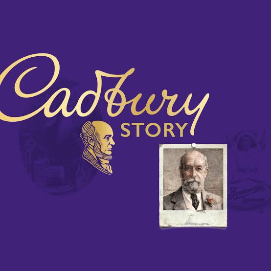

HISTORY
CADBURY-THE 'GLASS AND A HALF COMPANY
From a grocery shop, to a factory, to the Cadbury we know today.
This is the story of a father and two sons,and how their generosity
inspired generations to come.They poured a ‘glass and a half’ into their
Dairy Milk and into their workers and communities,too.At Cadbury,people
always have been, and will be, at the heart of everything we do.

In June 1905, in Birmingham, England, George Cadbury Jr made Cadbury's first Dairy Milk bar,
with a higher proportion of milk than previous chocolate bars; by 1914, it would become the company's
best-selling product.[3] Through its development, the bar was variously called 'Highland Milk', 'Jersey'
and 'Dairy Maid'.[3][4] Accounts on the origin of the Dairy Milk name differ; it has been suggested that
the name change came about on the advice of a shopkeeper in Plymouth,but Cadbury maintains that a customer's
daughter came up with the name.[3][4] Fruit and Nut was introduced as part of the Dairy Milk line in 1926,
soon followed by Whole Nut in 1930. By this point, Cadbury's was the brand leader in the United Kingdom.[5]
Almost a century on it has retained this position, with Dairy Milk ranking as the best-selling chocolate bar
in the UK in 2014.[1]In 2020,Dairy Milk was the second most popular snack overall in the UK behind McVitie's
Chocolate Digestive biscuits.[6]